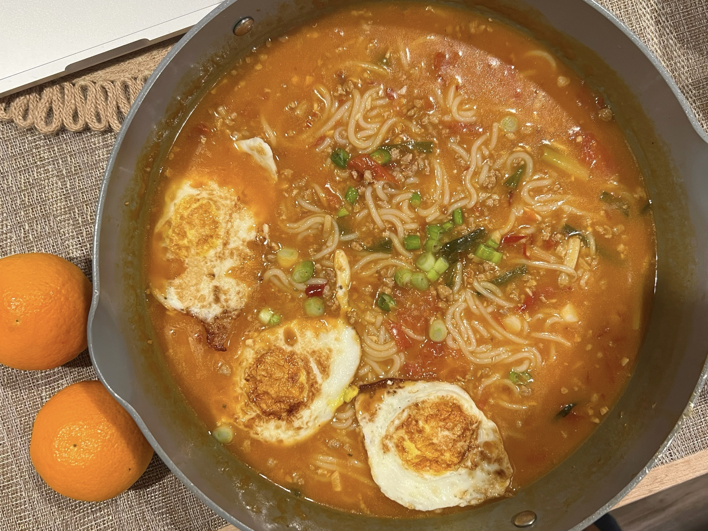
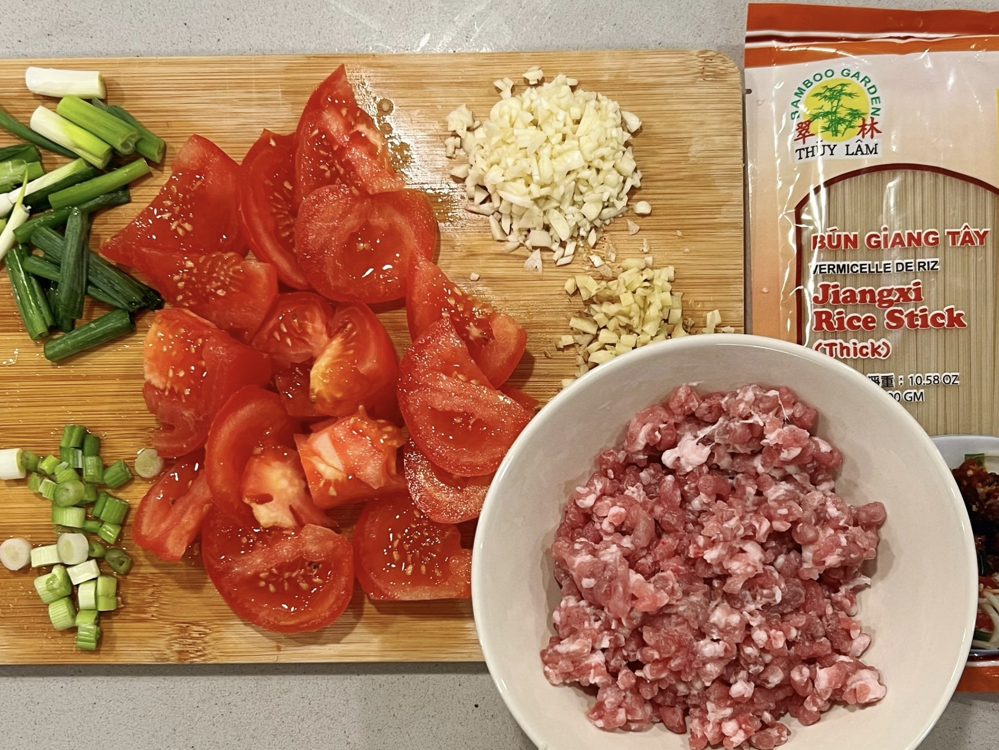

Recipes
Explore the rich flavors of the East with our collection of homemade Asian cuisine recipes. Try them with your friends and family!
🍛 Curry Pork Chop with Rice

Ingredients:
- Boneless pork chops
- S&B Golden Curry Sauce Mix packet
- Onions🧅, carrots🥕, potatoes🥔
- Panko breadcrumbs
- Eggs
🦀️ Spicy Fried Crab with Rice Cake

Ingredients:
- Crab legs (from Costco)
- Rice cake
- Dry red pepper 🌶️ and spring onion
- Flour and eggs
- Pixian bean paste
🍜 Tomato Ground Pork Rice Noodle


Ingredients:
- Tomatoes🍅
- Ground Pork
- Rice noodle
- Pixian bean paste
- Eggs🥚 and green onions